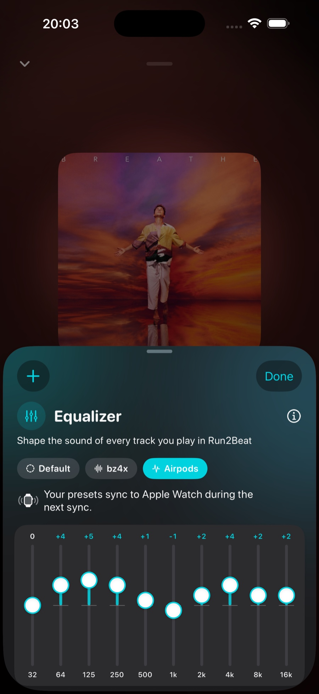
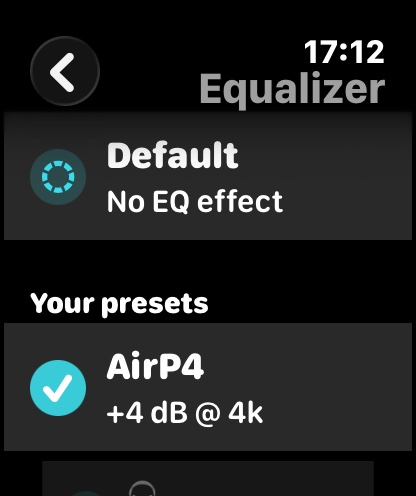

Deep dive
Shape it
to your
own ear.
Run2Beat’s equalizer shapes the sound of every track you play — library, BPM lists and playlists alike. Ten bands, named presets, and the same curve following you all the way out to your Apple Watch. This page is the long version of how it works.
What you can do
The equalizer is a 10-band graphic EQ you reach from the Now Playing screen: tap the mini player at the bottom of the app to expand it, then tap the teal equalizer button. A sheet slides up with ten vertical sliders. Boost the bands you want, cut the ones you don’t, save the result as a preset, and switch between presets with a single tap. Your settings stick around across app restarts and travel to your Apple Watch automatically.
Ten bands, ±12 dB
The sliders use the industry-standard ISO octave set — 32, 64, 125, 250, 500 Hz and 1, 2, 4, 8, 16 kHz — spanning the full audible range, the same layout (and the same ±12 dB range) you’ll recognise from Apple Music and iTunes.
- Drag a slider up to boost that band by up to +12 dB, or down to cut it by up to −12 dB.
- 0 dB on every band is the flat default — no colouring at all.
- Double-tap any single slider to instantly zero just that band.

Presets — save a sound, switch in a tap
Most people don’t want one EQ — they want a few, one per pair of headphones or per situation. Run2Beat lets you save the current curve under a name and recall it instantly.
- Save. Tap the + button in the top-left of the sheet to store the live curve as a named preset — “AirPods”, “Bass boost”, “Car”. Saved presets appear as chips above the sliders.
- Activate. Tap any chip to load that preset’s curve in one move.
- Update. Tweak an active preset and an Update button fades in next to the +; a small yellow dot on the chip marks the unsaved change. Tap Update to overwrite the preset with the current curve.
- Rename & delete. Long-press any chip for Update, Rename and Delete.
- Reset. Tap the Standard chip to zero every band at once and return to a flat response.
Editing a slider never throws you out of the preset you’re on — you leave a preset deliberately, by tapping another one or tapping Standard, not by accident while dragging.
The glow in the mini player
You don’t have to open the sheet to know the sound is tuned. The equalizer icon in the mini player glows the moment any slider leaves 0 dB or a non-flat preset is active. When everything is flat again, the glow switches off — a quiet, at-a-glance indicator that the EQ is doing something.
It shapes everything, instantly
The EQ sits in Run2Beat’s audio engine, so it colours every playback path — a library track, a tempo-matched BPM-list song, a playlist on shuffle. On iPhone the pipeline is a single unified graph:
player → time-pitch → equalizer → mixer
The time-pitch node is what BPM lists use to nudge a song onto your target cadence; for ordinary library and playlist playback it simply sits at rate 1.0 and passes audio through. The equalizer is Apple’s AVAudioUnitEQ with ten parametric bands, one octave of bandwidth each, wired immediately before the mixer. Because band gains can be written while the engine is running, a slider move takes effect on the currently playing track immediately — no pause, no rebuild, no audible glitch.
Crossfades keep the same sound profile across the blend. The secondary engine used during a fade carries its own identical EQ node; when the ramp finishes and that engine promotes to primary, its EQ becomes the live one. Your curve never drops out mid-transition.

On your Apple Watch
Every preset you save syncs automatically to the watch over the regular sync. On the wrist you pick a preset straight from the Home view and change your sound profile without touching the phone. If you haven’t saved any presets, the watch simply plays flat — and the equalizer card is hidden until there’s something to choose. Each row in the picker shows a short curve hint (for example +4 dB @ 4k) so you can tell presets apart on a wrist-sized screen without drawing all ten sliders.
Two sensible rules keep this predictable: the phone is the source of truth for the preset list (the watch holds a read-only copy you can’t edit), and the active choice is per-device — what you pick on your wrist won’t silently change what’s selected on the phone, and vice versa. Delete a preset on the phone and it disappears from the watch at the next sync; rename or retune it and the watch keeps the same selection highlighted, because each preset carries a stable ID that survives name and curve edits.
Why the Watch needs its own EQ
watchOS does not offer Apple’s built-in EQ audio unit at all — the entire AVAudioUnitEffect family (AVAudioUnitEQ, reverb, distortion, …) is marked unavailable on the platform. The phone pipeline therefore cannot be reused as-is.
Two alternatives were considered and rejected. Showing a picker but playing everything flat would break the point of the feature. Pre-rendering every track on the phone for every preset would multiply storage and sync time unacceptably on a watch. The shipped answer is a custom 10-band peaking-filter DSP that pre-processes decoded audio on the watch itself, so any preset you pick applies with zero extra transfer cost.
The Watch DSP — a biquad cascade
Each band is a peaking biquad whose coefficients come from Robert Bristow-Johnson’s Audio EQ Cookbook. With Q ≈ 1.414 each band spans roughly one octave — the right match for the ISO spacing so adjacent bands blend smoothly instead of fighting each other. A gain of exactly 0 dB short-circuits to an identity coefficient set, so flat bands cost nothing in the inner loop.
The processor applies all ten filters in series using Direct Form II Transposed topology (two state variables per channel per band, packed into one contiguous array to keep the hot path allocation-free). Output is clamped to a wide safety margin against numerical runaway at extreme settings; for normal music material that clamp never engages. A perfectly flat curve is detected up front and the whole pass is skipped, so the default sound costs no CPU at all.
Updating gains mid-track does not reset filter state, which is what keeps on-the-fly tweaks free of clicks. A full reconfigure (new sample rate, channel count, or a fresh track load) does reset state, as expected between songs.
How the Watch applies a preset
Because the EQ lives in Run2Beat’s own code rather than in an audio unit, the watch cannot simply “insert an effect” into a live graph. Instead it keeps two PCM buffers per track:
- Source buffer — the canonical decoded copy of the file.
- Processed buffer — a channel-by-channel copy with the active EQ cascade applied in place, then scheduled onto
AVAudioPlayerNode.
For a typical three-minute stereo track at 44.1 kHz that buffer is on the order of tens of megabytes — comfortable on modern Apple Watch hardware, and far simpler than a streaming ring buffer that would have to carry biquad state across segment boundaries. It also makes preset changes trivial: re-copy source → processed, re-run the cascade, reschedule.
Changing preset while a song is already playing is carefully ordered so you never hear a click. The watch reprocesses the entire source from frame 0 first (warming the filters), then stops the node, notes the current playhead, and reschedules only the remainder from that point. Stale completion callbacks from the previous schedule are ignored via a monotonically bumped token, so a mid-track EQ change cannot accidentally fire “track ended” logic from the old buffer.
One detail that matters for BPM lists: pitch adjustment on the watch is already baked into the files during sync. The watch player never re-pitches at playback time — it only applies your EQ curve on top of the pre-rendered tempo.
How presets travel to the Watch
Preset payloads ride the same WatchConnectivity application-context path as recipes, playlists and transition settings. Whenever you save, update, rename or delete a preset on the phone, Run2Beat pushes the full current list — there is no separate “delete this ID” message. An item missing from the incoming list is gone on the watch; an empty list clears the cache entirely, which hides the home card and forces flat playback.
The phone tries both a durable updateApplicationContext write and a low-latency sendMessage when the watch is reachable, and presets also piggy-back on every broader sync. The watch validates every entry on arrival (malformed records are dropped), diffs by ID and update time, and only notifies the player when something actually changed. Order is preserved end-to-end, so the chip row on the phone and the picker on the wrist stay in the same sequence.
What is stored where
On iPhone, live band gains, the saved preset list and the active preset ID each live under their own UserDefaults key, so a slider drag only rewrites the gains array and stays cheap. On Apple Watch the synced preset list is a mirror of the phone, while the active preset ID is a separate watch-local key — that is how your wrist choice survives restarts without waiting for a fresh sync, and without overwriting the phone’s live curve.
It remembers
Band gains, your saved preset list and the currently active preset all survive app restarts — on both iPhone and Apple Watch. You set your sound once; Run2Beat keeps it.
The short version
Ten ISO bands at ±12 dB, named presets, a live EQ node on iPhone and a custom biquad cascade on Apple Watch. The phone owns the preset list; each device keeps its own active choice. Flat costs nothing; everything else follows you from pocket to wrist without re-transferring your music.
→ Back to the overview